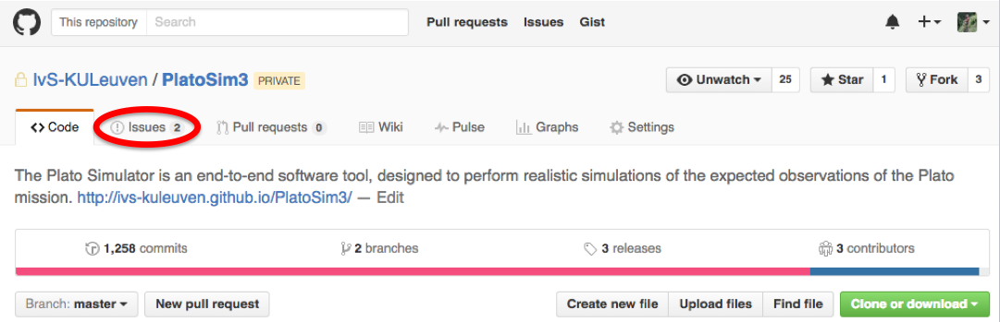
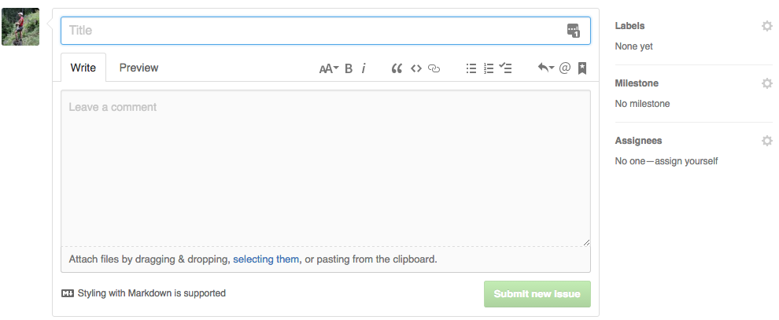

|
PLATO Simulator
3.3
An end-to-end simulator for the Plato mission.
|
|
PLATO Simulator
3.3
An end-to-end simulator for the Plato mission.
|
Although we do our very best to limit problems to a minimum, this is - unfortunately - no guarantee that you will never run into troubles when trying to install/update/run PlatoSim3. If you would have problems, questions, remarks,..., please, let us know!
You are encouraged to use the issue tracking system of GitHub to report any problem you would come across, rather than sending one of the PlatoSim developers an email. This helps you and us to better keep track of which problems arise and what their status is.
Browse to the PlatoSim3 repository on GitHub and select the Issues tab (see Fig. 1).

The issue were are currently working on are listed on this page.
You can raise a new issue by clicking the green New issue button. This will direct you to a page as shown in Fig. 2.

In the upper part (where it says "Title") you can enter a concise description of the problem. A more elaborate description can be entered in the bottom part (where it says "Leave a comment"). In order to save some time, it is suggested to provide us with the following information in the issue:
git describe on the command line in your installation directory. 1.8.11
1.8.11